Lead an AI-Driven
Workforce Transformation
秉持「先串資料、再談 AI」的原則，我將推動建構與 SAP、PLM、MES 互補、可重複使用的企業級 AI 平台，讓 AI 從單點應用走向跨部門工作流程，並同步推動人才賦能、知識傳承與人機協作。以營運效率、決策品質與成本效益為衡量核心，將 AI 能力轉化為可規模化的組織能力，讓董事長與資訊長清楚掌握投資回報及轉型成效。

光寶現況：AI 營收倍增，內部營運必須跟上
LITEON at an inflection point
| 面向 | 公開資訊重點 | 對 AI 平台的含義 |
|---|---|---|
| 規模 | 86 家子公司、112 座工廠、全球 20 多個據點 | 平台必須一次建置、多廠複製；資料口徑先統一 |
| 產能 | 越南新廠 2026.11 開幕；高雄二期 2026.12；美國德州 2027 Q2 營運 | 新廠是 AI 最佳試點：無歷史包袱 |
| 產品 | 8.5kW PSU、BBU 量產；110kW Power Shelf、800VDC Power Rack、120kW CDU | 產品複雜度上升，研發與品質知識需 AI 輔助 |
| ERP | SAP ECC → S/4HANA，2027.01.04 全球同步上線；16 項新功能、27 項流程優化 | AI 須在 Clean Core 之外擴充，避免回頭客製 |
| 製造 | MES 與 ERP 緊密結合：替代料、齊套料、工單排程 | 下一步是「預測、建議、主動判斷」——正是 Agent 的位置 |
| 財務 | 合併報表自動化後，數據串接效率提升 90% 以上 | 已有資料自動化基礎，可延伸至分析與預測 |
| 資安 | 以 ISO 27001 建立 IT/OT 資安治理框架 | AI 治理可直接接軌 ISO 42001 |
資料來源：財經媒體專題報導、光寶 2026 Q3 法人說明會公開資訊；數字以公開資訊觀測站為準。
職缺六項工作內容 × 我的做法與實績
Six responsibilities, one operating model
與高階主管定義優先導入 AI 領域，規劃 AI 平台藍圖
- 我的做法
- 以「經濟效益 × 可行性 × 可重用」三軸評分，與事業群主管共同排定投資組合；用一頁式決策表向經營層呈核。
- 做過的實績
- 曾為集團撰寫年度 IT 策略與投資計畫並呈報 CEO 與經管會，以策略支柱與 Run／Grow／Transform 預算框架落地。
- 到任指標
- 90 天內交出 AI 價值地圖與前 5 大用例財務假設
把零散應用做成可重複使用的資料產品與平台
- 我的做法
- 抽出模型閘道、知識庫、資料產品、Agent 編排與監控等共用元件；以黃金路徑讓新用例照範本上線。
- 做過的實績
- 隆中網絡（6542）把各專案自建環境改為平台提供標準元件，核心服務零停機、TCO −30%；設計多模型網關與企業任務中樞的參考架構。
- 到任指標
- 新用例上線時間由「月」縮短為「週」
建立和 SAP、PLM、MES 互補的 AI stack
- 我的做法
- 不動 SAP 核心、不重造 MES／PLM；以 API、CDC 與事件串流讀取資料，AI 產出「建議」回寫，經人員核可後執行。
- 做過的實績
- 泓晏科技以 SAP S/4HANA 串接 MES、PLM、APS，加上 Edge AIoT 與 AI 不良預測：良率 +15%、OEE +18%；規劃 PLM→SAP→MES 單一數據流的整合藍圖。
- 到任指標
- S/4HANA 上線後 6 個月內首批供應鏈 AI 用例上線
組建 AI 組織與人才梯隊，帶領 AI 技術主管與工程師
- 我的做法
- 「中央平台＋事業群嵌入」雙軌組織；技術主管能力模型、九大技術發展路線與接班計畫。
- 做過的實績
- 跨國網路科技集團 IT 團隊 50+ 人；帶領企劃、前端、後端與 DBA 三組逾 30 人完成從零到一的組織重整，建立職務說明與能力評核。
- 到任指標
- 每位技術主管至少一位可接手人選
推動業務主導的平台團隊與企業內部 PO 培養，帶動 AI 原生的工作方式
- 我的做法
- PO 學院：業務主管學會寫用例財務假設與驗收標準；Champions 網絡；「主管先學、IT 先試、有成效再擴散」。
- 做過的實績
- 跨國網路科技集團開設主管 AI 工作流特訓，依 ISO 42001 建立使用規範；Agentic AI 工作流使流程自動化效率 +55%。
- 到任指標
- 第一年 30 位認證 PO
定期向高階主管與事業單位主管報告成效
- 我的做法
- 月度 AI 價值儀表板、季度 AI 投資委員會、半年向董事長報告；用 EBITDA、ROI、TCO 的語言。
- 做過的實績
- 直報董事會與 Global CIO 逾 10 年；以平衡計分卡與一頁式決策表每季報告里程碑。
- 到任指標
- 每季公開檢視效益，財務長確認金額
必要條件與加分條件
| 條件 | 我的證據 | 結果 |
|---|---|---|
| 學歷、產業背景不限 | 資訊科技管理博士；電子製造、外商軟體、上市櫃平台三種產業 | 符合 |
| 10 年以上帶領 AI／資料團隊 | 2010 起任資訊長帶資料與系統團隊；2018 起帶 AIoT 與 AI 良率團隊；2025 起帶 Agentic AI 團隊，累計逾 15 年 | 符合 |
| 主導 AI 平台或產品上線並交出可量化成果 | AI 不良預測：良率 +15%、OEE +18%；Agentic AI：自動化效率 +55% | 符合 |
| 加分｜從零建立 AI／資料平台與團隊 | 泓晏科技 Edge AIoT 數據中台、跨國網路科技集團 AI 治理與 Agent 平台，皆從零開始 | 符合 |
| 加分｜與 C-Level 或高階主管溝通 | 直報董事會與 Global CIO；以 EBITDA、TCO、ROIC 報告 | 符合 |
| 加分｜CIO 或 IT 部門主管經驗 | CIO／CISO／CDAIO／技術處長職涯逾 15 年 | 符合 |
| 加分｜國內大型企業數位轉型 | 多廠 S/4HANA 整併、全球核心服務遷移不停機、集團中央資訊架構 | 符合 |
技術職能與管理職能對照
Technical & managerial competency
光寶 AI 平台藍圖：與 SAP、PLM、MES 互補
Don't touch the core — augment it
設計原則：不動 SAP 核心、不重造 MES／PLM。AI 平台站在三大系統旁邊，讀取資料、提出建議，在授權範圍內執行。點選各層看說明。
與三大系統的分工
| 系統 | 負責：記錄與交易 | AI 平台負責：預測與建議 |
|---|---|---|
| SAP S/4HANA | 訂單、採購、庫存、財務過帳 | 需求預測、缺料預警、異常交易偵測、月結分析 |
| PLM | BOM、ECN、圖面版本 | 設計知識檢索、替代料建議、ECN 影響分析 |
| MES | 工單執行、站點紀錄、追溯 | 排程最佳化建議、良率預測、設備預防保養 |
平台選型以 SAP 原生、公有雲、開源地端三條路線比較 TCO 與資料主權後呈核，不預設單一供應商。
光寶 AI 平台架構：放進光寶的企業與資訊架構
Enterprise architecture first, then AI
先串資料，再談 AI。AI 平台不是另一套系統，而是站在 S/4HANA、PLM、MES、QMS 旁邊的共用能力，建在「蜂巢計畫」的 API 平台與資料湖倉之上，一次建置、全球 112 座工廠按範本複製。
光寶企業與資訊架構全景：AI 平台與資料底座的位置
粗框兩層是新增的部分：資料底座由蜂巢計畫建置，AI 平台在其上提供共用能力；其餘各層沿用光寶現有架構，不動 SAP 核心。
光寶的 AI 問題，從資料、法規與規模開始
| 面向 | 光寶現況（公開資訊與盤點假設） | 對 AI 架構的含義 |
|---|---|---|
| 產線 | SMT、插件、組裝、Burn-in 與功能測試；電源、光電、雲端與物聯網產品線並行 | 機台參數、AOI 與測試資料是預測模型的主原料；機台不直接上網，資料只經工業 DMZ 上送 |
| 系統 | SAP ECC 轉 S/4HANA，2027.01.04 全球同步上線；MES 已與 ERP 緊密結合（替代料、齊套料、排程） | AI 站在核心系統旁邊讀資料，不客製 S/4HANA 核心；切換期間不動核心 |
| 法規與客戶 | 以 ISO 27001 建立 IT/OT 資安治理；車用產品適用 IATF 16949；雲端客戶與品牌客戶定期稽核 | AI 產出只能是「建議」，電子紀錄要有稽核軌跡、電子簽章與 ALCOA+ |
| 規模 | 86 家子公司、112 座工廠、全球 20 多個據點；越南新廠、高雄二期、美國德州廠陸續營運 | 平台一次建置、按範本複製；新廠無歷史包袱，是最佳試點；資料落地依 D06 決定 |
| 營運 | 產品複雜度上升（8.5kW PSU、BBU、Power Rack、CDU）；替代料與齊套料管理是日常重點 | 缺料與替代料預警、規格與報價知識檢索，是財務效益最快看得見的用例 |
| 成長 | AI 相關營收占比超過 30%，2027 年估 40–50% | 研發與品質知識需要 AI 輔助，AI 平台要跟得上新產品導入的速度 |
光寶 AI 平台：六層加一條治理主軸
點選各層看組件、技術選項與光寶落地重點。
四大多核心中樞：AI 算力、網關、預測與 Agent
HowardAGent 應用中樞
- Agentic RAG：SOP、IATF 規範、客戶規格，Hybrid 檢索強制附版本來源
- 跨部門 Agent 工作流：HR 履歷篩選、財務對帳、採購詢比價
- MCP Hub：將 S/4HANA、MES、PLM 封裝為標準受控工具，Text2SQL 嚴格唯讀
- 品質 Copilot、報價助理、NCR／8D 初稿生成
HowardRoute 企業模型網關
- 單一 OpenAI 相容網關（LiteLLM），串接雲端商業 API 與地端私有開源模型
- Smart Routing：日常任務走 8B/14B 小模型，複雜推理走大模型，Token 成本省 30%+
- 毫秒級自動備援容錯（Fallback）與速率限制（Rate Limiting）
- AI FinOps 成本治理：Token 級即時看板、部門配額隔離與用量分攤 (Chargeback)
HowardAIDC 算力推論中心
- 地端 AIDC 運算中樞：完美契合光寶 800V DC、Power Shelf 與液冷 CDU 架構
- K8s GPU 資源調度：NVIDIA GPU Operator、MIG (Multi-Instance GPU) / vGPU 虛擬切片
- 高吞吐推論服務叢集：vLLM 叢集部署（PagedAttention、Continuous Batching），延遲降 35%
- 私有模型選型微調：Llama 3 / Qwen / Mistral 地端 LoRA/QLoRA 領域特化微調
HowardPro 製造預測核心
- 攻堅 Clean Core 痛點：替代料智能選用推演、工單齊套料即時預警與排產
- AutoML：製程參數建議、設備預防保養（置件機、回焊爐壽命預測）
- 虛擬量測與 SPC／AOI 異常預警、Domain Twin 傳承資深工程師經驗
- AILM：模型版本、漂移監控與根因分析
平台設計圖：架構總覽＋UML 2.x 全 14 種圖型
以光寶品保情境（NCR／8D、SPC 預警、電子簽核、IEC 62443 分區）描述三個核心元件。點圖可放大檢視。
總覽
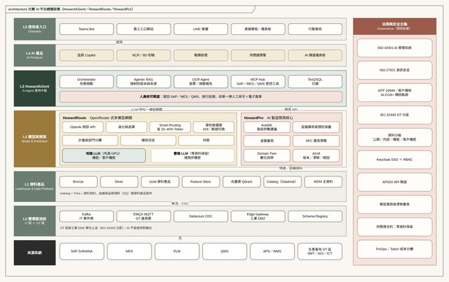
結構圖 Structure（7 種）
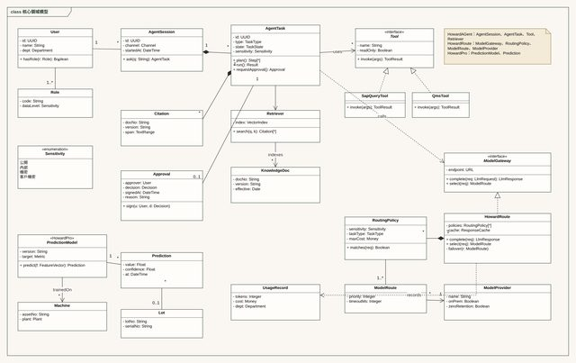
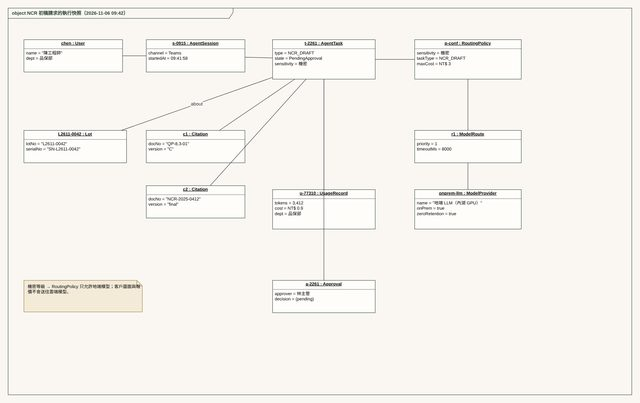
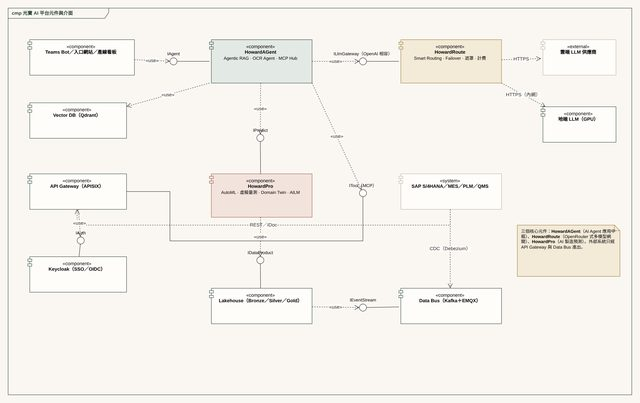
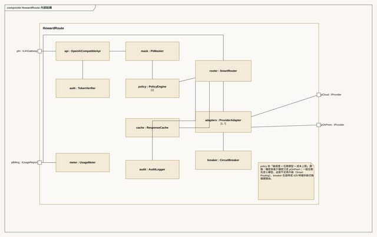
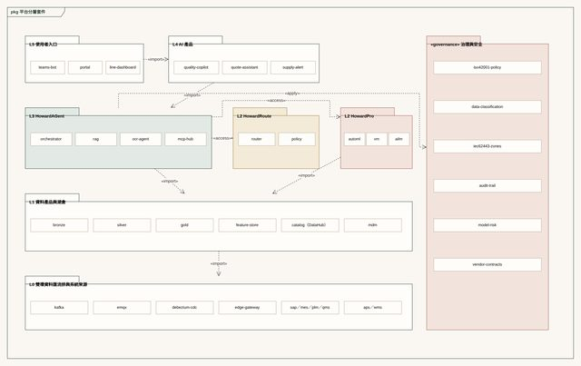
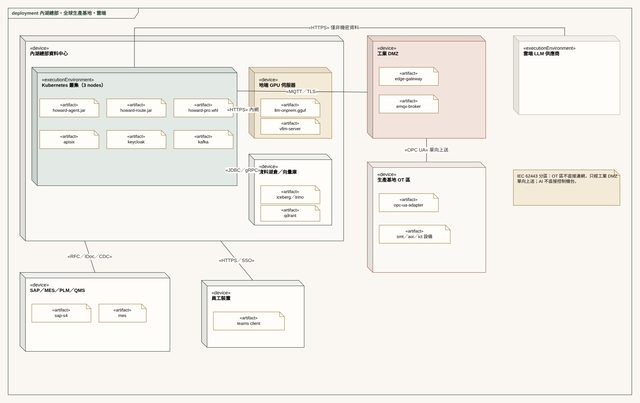
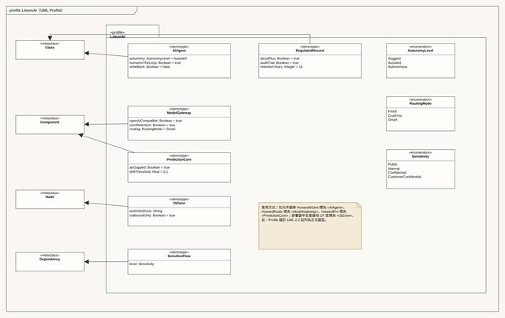
行為圖 Behavior（3 種）
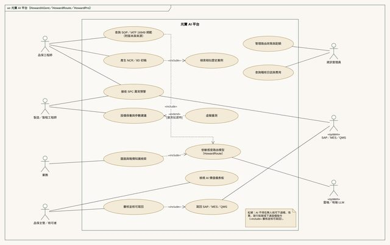
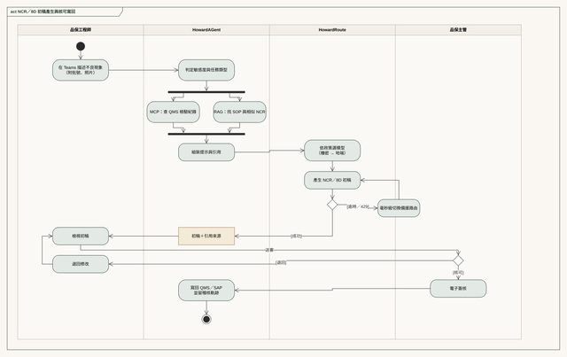
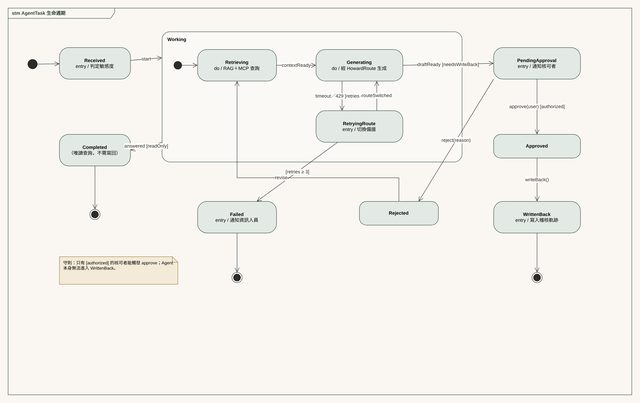
互動圖 Interaction（4 種）
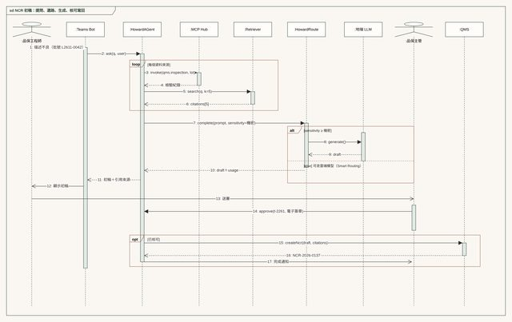
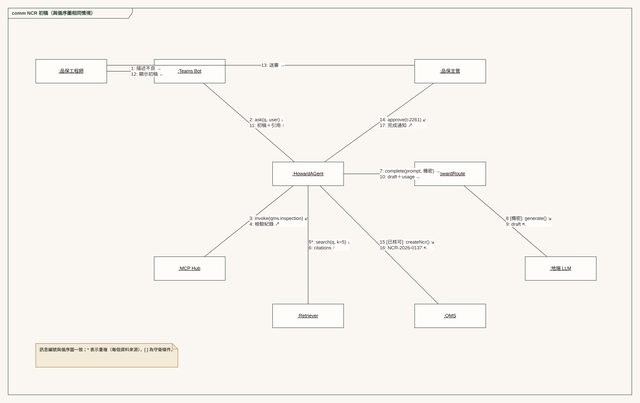
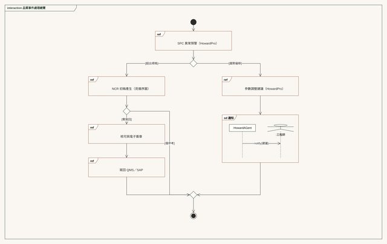
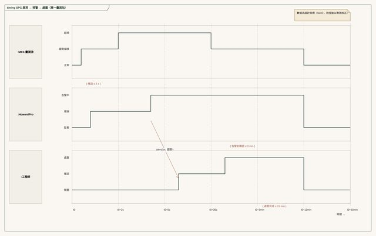
沿著光寶價值鏈排的 AI 場景
以「經濟效益 × 可行性 × 可重用」三軸評分。A 為優先投入、B 為第二波、C 為數週內可見成果的快速勝利。
SPC／AOI 異常預警
訂閱 MES、AOI 與測試站資料流，偵測趨勢偏移，在超規前提醒工程師。
設備預防保養
以置件機、回焊爐與測試機台的運轉資料預測保養時點，減少非計畫停機。
缺料、替代料與呆滯預警
結合 S/4HANA 訂單、庫存、APS 與 PLM 變更，提早發現缺料、替代料機會與呆滯料。
NCR／8D 初稿 Agent
彙整檢驗紀錄、相似歷史案例與 SOP，產出 NCR 與 8D 初稿供品保核可。
規格與報價知識檢索
相似規格、歷史報價與工時檢索，縮短報價準備時間；客戶設計圖只走地端模型。
ECN 影響分析
PLM 設計變更自動列出受影響的 BOM、工單、庫存與檢驗計畫。
客戶稽核文件準備助理
依 IATF 16949 與客戶稽核條文找出對應 SOP、紀錄與追溯資料，整理成稽核清單。
虛擬量測與測試時間預測
以製程參數預估關鍵特性與 Burn-in 結果，減少等待；正式放行仍以實測為準。
SOP／規範知識庫
Agentic RAG 回答同仁的 SOP 與表單問題，答案附文件版本與來源。
單據 OCR 自動入帳
發票與單據辨識後產生傳票草稿，會計確認後過帳。
S/4HANA 新流程問答
把 16 項新功能與 27 項流程優化的教材與 SOP 做成知識庫，支援切換後的使用者。
AI 程式審查
內部開發與 SI 交付程式經 AI 審查與 DevSecOps 品質關卡。
AI 治理：以 ISO 27001 為底，延伸到 ISO 42001 與客戶稽核
| 面向 | 機制 | 依據 |
|---|---|---|
| 資料分級 | 公開／內部／機密／客戶機密四級；客戶設計圖、報價與配方不送未核准的外部模型 | ISO 27001、各國個資法 |
| 模型風險 | 上線前評測正確率、幻覺率；回答強制附來源；高風險用例人工複核 | ISO 42001、NIST AI RMF |
| 電子紀錄 | AI 產出的建議與人員核可都留稽核軌跡；Bronze 層只增不改 | IATF 16949、客戶稽核、ALCOA+ |
| OT 安全 | AI 不直接控制機台；參數建議經 MES 與工程師核可後執行 | IEC 62443 |
| 權限稽核 | 模型網關統一身分驗證、遮罩、完整日誌；Token 依事業群分攤 | 零信任 |
| 供應商 | 合約明訂資料不得用於訓練、資料留存地點與刪除時限 | ISO 27036 |
AI 優先導入領域與用例組合
Value × feasibility × reusability
效益情境試算（示意）
以下為說明決策邏輯的示意模型，數字非光寶實際資料；到任後以財務長確認的基準值取代。
AI 組織、人才梯隊與 PO 學院
Central platform + embedded business teams
| 團隊 | 職責 | 關鍵角色 | 第一年人數（初估） |
|---|---|---|---|
| AI 平台工程 | 模型閘道、Agent 編排、MLOps／LLMOps、監控 | 平台技術主管、平台工程師、SRE | 6–8 |
| 資料產品 | 湖倉、主資料、特徵庫、資料契約 | 資料技術主管、資料工程師、資料架構師 | 5–7 |
| AI 應用與科學 | 模型開發、評測、RAG 調校 | ML 技術主管、資料科學家、AI 工程師 | 5–7 |
| AI 治理與資安 | ISO 42001、模型風險、資料分級 | 治理經理（與資安處協作） | 1–2 |
| 事業群嵌入 | 用例落地、流程再造 | BU PO、業務分析師、Champions | 由 BU 編制 |
L1 素養與個人應用
AI 使用規範、資料分級、驗證習慣；主管 AI 工作流特訓。
產出：人人會用、知道什麼不能做
L2 部門流程與 Agent
每部門挑 1–2 個流程，由業務擔任 PO、IT 提供平台。
產出：可量測的部門用例
L3 跨部門再造與普及
跨部門 Agent 串接、共用知識庫、Champions 網絡。
產出：組織層級的效益
AI 治理、資安與風險
Build on ISO 27001, extend to ISO 42001
| 面向 | 機制 | 標準 |
|---|---|---|
| 資料分級 | 公開／內部／機密／客戶機密四級；決定可上雲、可進模型的範圍 | ISO 27001、個資法 |
| 模型風險 | 上線前評測正確率、幻覺率與偏差；高風險用例需人工複核 | ISO 42001、NIST AI RMF |
| 權限與稽核 | 模型閘道統一身分驗證、遮罩與完整日誌 | 零信任 |
| OT 安全 | AI 不直接控制設備；建議經 MES 與人員核可後執行 | IEC 62443 |
| 供應商 | 合約明訂資料不得用於訓練、資料留存地點 | ISO 27036 |
| 主要風險 | 緩解措施 |
|---|---|
| 與 S/4HANA 上線搶資源 | 2027 Q1 前只做不碰 SAP 的用例（品質、研發知識） |
| 資料品質不足 | 先做資料產品與口徑統一，再做模型 |
| PoC 停在 PoC | 開始前就定義上線條件、PO 與損益科目 |
| 影子 AI | 提供好用的官方平台＋使用規範，而非只禁止 |
| 算力成本失控 | Token／GPU 按 BU 分攤、配額與月報 |
到任 180 天計畫與第一年指標
Listen, decide, deliver — aligned with the S/4HANA cut-over
傾聽
- 與 CIO、事業群主管、財務長訪談
- 盤點既有 AI 應用、資料與團隊
- 確認 S/4HANA 時程與介接點
交付：AI 資產地圖與現況診斷
定向
- 用例評分與投資組合
- 平台三路線選型（SAP 原生／公有雲／開源地端）
- 組織設計與招募計畫
交付：AI 平台藍圖、前 5 大用例財務假設
首批成果
- 平台 MVP 動工
- 2 個快速勝利用例上線
- 發布 AI 使用規範
交付：可展示成果、第一次季報
擴展
- 平台 MVP 上線、對齊 S/4HANA 切換
- A 級用例進入示範廠試點
- PO 學院第一梯次
交付：新用例上線時間縮至週
第一年 KPI（基準與目標於到任 60 天內共同訂定）
| 類別 | 指標 | 方向 |
|---|---|---|
| 經濟效益 | 已驗證年化效益（財務長確認） | 目標於到任 60 天內共同訂定 |
| 平台 | 上線用例數；新用例上線時間 | ≥ 10 個；≤ 4 週 |
| 使用 | AI 平台月活躍使用者比例 | 逐季提升 |
| 組織 | 認證 PO；技術主管接班人選 | 30 位；每位主管 1 人 |
| 治理 | 用例風險評估完成率；重大資安事件 | 100%；零 |
| 成本 | 每千次請求成本；算力預算達成率 | 逐季下降；±10% |
報告節奏：每月 AI 價值儀表板；每季 AI 投資委員會決定用例進出；每半年向董事長報告平台成熟度與已實現效益。
資料與整合底座實施藍圖（蜂巢計畫）
Project Hive: one API platform, one lakehouse
把內湖總部、台灣與海外工廠（先以新廠為試點）串成一個 API 平台與一座資料湖倉。在 S/4HANA 的 Clean Core 之外，接通 MES、PLM、QMS、APS 與機台資料，作為 BI、KPI、批號追溯與 AI 應用的共同底座。
範圍與治理原則
跨事業群資訊架構升級
由 IT AI 平台負責人主導，依 RACI 推動基礎架構、應用系統、品保、事業群 PO、各廠 IT 與 SI／原廠落地。先串資料，再談 AI。
平台負責人負責架構與統籌
負責需求統整、架構規劃、選型審查與進度回報；開發、部署與維運由平台團隊、事業群嵌入團隊與 SI 承接。
選型與預算依盤點定案
SAP 原生、雲端、開源地端三條路線，依現況盤點、法規檢核與 TCO 比較後呈 CIO 核定。
總部統一標準，各廠回饋校正
需求三種來源：總部推動、事業群與各廠需求、經營層年度規劃。報表可依事業群與廠別呈現，背後的料號、批號與指標口徑必須一致。
六階段推進與決策閘門
週數自到任日起算，標籤為進入下一階段前必須完成的裁示。階段 5 期程依選型結果另訂。
現況盤點
清查各廠系統、資料庫、介面、機台連網與窗口名單；遺留客製報表與介面清單。範圍確認
核定首批 API、資料湖納入範圍與試點廠產線。平台選型
比較三條路線，產出 TCO 與建議方案，完成資料落地與法規檢核。PoC 驗證
依驗收標準驗證 S/4HANA↔MES 工單、PLM→S/4HANA BOM 與 BI 取數。建置與驗收
正式環境部署、各廠分批上線、階段驗收。維運交接
維運手冊、分工表生效、SLA 監控上線。前 26 週 WBS 甘特圖
排程為建議值，到任盤點後校正。手機請左右滑動。
與蜂巢計畫同步的 AI 推進節奏
週數自到任日起算。前 10 週適逢 S/4HANA 切換，不碰核心，先做知識類與品質類用例，同時讓資料平台成熟。
盤點與規範
- 盤點影子 AI 使用與既有工具
- 發布 AI 使用規範與資料分級
- 主管 AI 工作流特訓
快速勝利
- SOP／規範知識庫（附來源）
- S/4HANA 新流程問答
- 單據 OCR
品質與製造 PoC
- SPC／AOI 異常預警（試點產線）
- 設備預防保養
- NCR／8D 初稿 Agent
平台化與複製
- 模型網關與 Agent 平台正式上線
- 複製到第二座工廠
- 月度 AI 價值儀表板
網路架構：IT／OT 分區與多廠互連
依 IEC 62443 與 Purdue 模型分區。機台與量測設備留在 OT 區，資料經工業 DMZ 的邊緣閘道往上送；總部與各廠以 SD-WAN 雙線互連，雲端只走私有連線。
OT 設備不直接連外網
機台資料只能經工業 DMZ 的邊緣閘道往上送，雲端與 IT 區不得反向直連機台。
SD-WAN 雙線互連
內湖總部與各廠以 SD-WAN 主線加備援線互連；量測各廠頻寬後設定機台資料與 ERP 流量的優先權。
斷線不停線
邊緣閘道在斷線時把工序與檢驗資料寫入本地佇列，產線照常作業；復網後依時序自動補傳，不重複入帳。
API 平台：五層架構
正常流程
- MES 回報工序完工與良品數
- 邊緣閘道加密轉送
- WAAP 白名單與限流檢查
- API 閘道驗證身分與權限
- 寫入 S/4HANA 工單確認與資料湖
- 回傳成功，產線看板更新
斷線時
- MES 照常回報
- 上傳逾時，邊緣閘道改寫本地佇列
- 回傳「已接收」，產線不停
- 品質資料同樣暫存，不遺失
復網後
- 邊緣閘道偵測復網
- 依時序批次補傳
- S/4HANA 與資料湖依交易編號去重
- 清空佇列，發出補傳完成通知
資料湖倉：三層結構與傳輸節奏
機台與工序資料近即時（分鐘級）上傳；S/4HANA 財務與庫存每日結算；海外據點依頻寬於離峰彙總。
Bronze 原始層
完整保留 S/4HANA、MES、PLM、QMS、機台的原始異動，只能新增、不可修改，作為稽核軌跡的來源。
Silver 清洗層
去重、時間戳統一、料號與批號對齊，關聯產品、機台、客戶主檔；檢查 BOM 版本是否一致。
Gold 主題層
每日結算表、批號／序號正反向追溯表、良率與 OEE、存貨周轉、齊套率、SPC 管制圖資料。
| 資料類型 | 來源 | 傳輸節奏 | 用途 |
|---|---|---|---|
| 機台狀態、加工參數 | SMT／AOI／ICT／測試機台（OPC UA、SECS/GEM） | 每 1–5 分鐘 | OEE、停機分析、預防保養 |
| 工序完工、良品與不良數 | MES | 即時（API） | S/4HANA 工單確認、良率 |
| 檢驗與測試結果 | QMS、AOI、測試站 | 每批完成時 | SPC、出貨放行、客戶稽核 |
| 設計與 BOM 變更 | PLM | 變更核准時 | 同步 S/4HANA 與 MES，避免用錯版本 |
| 訂單、庫存、成本 | SAP S/4HANA | 每日 02:00 結算 | 存貨周轉、毛利、經營看板 |
| 排程與齊套料 | APS、MES | 每班 | 工單排程建議、缺料預警 |
工具選型：三條路線對照
路線 A 貼近 S/4HANA 與 SAP BTP；路線 B 適合已有 Microsoft 授權與 AD 的環境；路線 C 授權費最低但需要維運人力。最終依 D04 呈核。
| 架構層級 | A · SAP 原生 | B · 雲端（Azure） | C · 開源地端 |
|---|---|---|---|
| 邊界防護 | SAP BTP 內建防護＋前端 WAF | Front Door＋WAF、Private Link | Coraza WAF／NGINX、CrowdSec |
| API 閘道 | SAP Integration Suite（API Management） | Azure API Management | Kong Gateway OSS／Apache APISIX |
| 整合與轉換 | Cloud Integration（CPI）、IDoc／OData | Logic Apps、Service Bus | Node-RED／自建服務 |
| 機台資料 | SAP Digital Manufacturing（選配） | IoT Hub／IoT Operations | OPC UA 閘道＋MQTT（EMQX） |
| 資料擷取 | SAP Datasphere 複寫流程 | Data Factory＋自託管整合執行階段 | Debezium CDC／Airbyte |
| 資料湖倉 | SAP Datasphere | Fabric／ADLS Gen2（Delta Lake） | MinIO＋Apache Iceberg＋Trino |
| 排程與對帳 | Datasphere 任務鏈 | Data Factory 管線 | Apache Airflow |
| BI | SAP Analytics Cloud | Power BI | Apache Superset／Grafana |
| 監控追蹤 | SAP Cloud ALM | Azure Monitor | OpenTelemetry＋Prometheus＋Grafana |
遺留客製收斂：既有客製報表與點對點介面分為保留、移轉、淘汰三類，配合 S/4HANA Clean Core 逐步收斂到 API 平台與資料湖倉。
資安與法遵
邊界 WAAP＋旁路 API 安全
邊界 WAAP 在入口即時攔截已知攻擊；旁路 API 安全以流量鏡像分析行為，找出未列管 API 與越權讀取（例如換工單號偷看其他客戶的設計圖），再把封鎖規則回送 WAAP。
IEC 62443 分區與管道
機台 PC 不上網、USB 管控、遠端維護只經跳板主機並錄影；修補先在測試機驗證，避免影響產線。
電子紀錄可稽核
依 IATF 16949 與客戶稽核要求：電子紀錄要有稽核軌跡、電子簽章與保存期限，資料符合 ALCOA+（可歸屬、清楚、即時、原始、正確）。
設計圖與客戶資料不外流
依資料分級決定可上雲與可進 AI 的範圍；客戶設計圖與報價採列級權限與遮罩；海外據點依當地個資與資料在地化規定。
第一階段 9 項任務
| # | 工作項目 | 主要工作內容 | 交付產出 | 階段 |
|---|---|---|---|---|
| 1 | 現況與需求盤點 | 各廠系統、資料庫、介面、機台連網與遺留客製 | 現況清單、需求清單、窗口名單 | 1 |
| 2 | API 平台規劃與建置 | 盤點既有介面，確認首批串接（S/4HANA↔MES 工單、PLM→S/4HANA BOM） | API 清單、平台方案 | 2→5 |
| 3 | 資料湖倉規劃與建置 | 確認資料納入範圍、分層、保存期限與權限 | 資料來源清單、湖倉方案 | 2→5 |
| 4 | 平台選型與成本評估 | 比較 SAP 原生、雲端、開源地端三條路線 | 選型比較表、TCO、建議方案 | 3 |
| 5 | 機台與系統資料串接 | 試點產線機台連網、擷取方式與對來源系統的效能影響 | 串接規格、資料管線、測試結果 | 2→5 |
| 6 | 每日結算與批號追溯 | S/4HANA 日結、對帳規則、批號／序號正反向追溯、失敗補跑 | 結算規則、追溯表規格 | 2→5 |
| 7 | 網路與資安配套 | IT／OT 分區、SD-WAN、雲端連線、權限與稽核需求 | 網路架構、資安需求清單 | 3 |
| 8 | PoC 與階段驗收 | 依驗收標準驗證首批串接、對帳與 BI 取數 | PoC 報告、問題清單 | 4 |
| 9 | 執行與維運分工 | 確認平台團隊、各廠 IT、品保、製造與 SI 的建置與維運責任 | 分工表、交接清單 | 6 |
RACI 責任矩陣（初稿，待 CIO 確認）
| 任務 | CIO（發起人） | AI 平台負責人 | 基礎架構／OT | 應用系統（SAP／MES） | 品保／法遵 | 事業群 PO／製造 | SI／原廠 |
|---|---|---|---|---|---|---|---|
| 1 現況與需求盤點 | A | R | C | C | C | C | — |
| 2 API 平台規劃與建置 | I | A | C | R | I | C | R |
| 3 資料湖倉規劃與建置 | I | A | C | R | C | I | R |
| 4 平台選型與成本評估 | A | R | C | C | C | I | C |
| 5 機台與系統資料串接 | I | C | R | A | I | R | R |
| 6 每日結算與批號追溯 | I | C | I | A | R | C | R |
| 7 網路與資安配套 | I | C | A | C | C | C | R |
| 8 PoC 與階段驗收 | A | R | C | R | C | C | C |
| 9 執行與維運分工 | A | R | C | C | I | C | I |
R 執行 · A 最終負責 · C 諮詢 · I 知會。每項任務只有一位 A。
PoC 驗收標準
| 驗收項目 | 通過門檻（建議值，D01 時確認） | 對應任務 |
|---|---|---|
| S/4HANA↔MES 工單同步 | 試點產線工單下達與完工回報全部自動化，無人工轉檔 | 2、5 |
| PLM→S/4HANA BOM 變更 | 設計變更核准後 1 小時內同步至 S/4HANA 與 MES，版本一致 | 2 |
| 批號／序號追溯 | 任一成品批號 5 分鐘內查出原料、機台、檢驗與出貨對象 | 6 |
| 每日結算對帳 | 連續 10 個工作日差異筆數為 0 | 6 |
| 斷線補傳 | 模擬廠區斷線 4 小時，恢復後自動補傳且無重複 | 5、7 |
| 來源系統影響 | 擷取期間 S/4HANA 與 MES 回應時間增加 ≤ 10% | 5 |
| BI 取數 | 既有報表可改由資料湖倉取數且數值一致 | 8 |
| 稽核軌跡 | 所有寫入 S/4HANA 的 API 交易可追溯操作者、時間與內容 | 2、7 |
主要風險與緩解
| 風險 | 影響 | 緩解措施 |
|---|---|---|
| S/4HANA 切換期 | 整合做在切換中的核心上，需要重做 | 切換凍結期只做盤點與知識類用例；介面一律走 API 閘道，降低對核心版本的依賴 |
| 各廠機台品牌與年份不一 | 連網成本與時程膨脹 | 盤點控制器型號；首批只選一個試點廠的一條產線 |
| 客戶稽核與 IATF 16949 | 電子紀錄不符要求，影響客戶認證 | 品保參與 PoC；驗收納入稽核軌跡與電子簽章 |
| 遺留客製盤點不全 | 收斂後遺漏報表或介面 | 新舊並行一段時間，資料完整轉出後才下線 |
| 同仁兼任工作過量 | 日常支援與專案互相排擠 | D02 明定窗口與每週投入時數；日常支援優先 |
| 維運承接未定 | 上線後無人負責 | D05 在 PoC 前確定，承接者參與 PoC |
待 CIO 裁示的 6 項決策
第一階段優先範圍
建議：只做底座（API＋資料湖倉＋首批串接），BI 優化放第二階段。卡住任務 2、3、5、6。
跨部門對接窗口
建議：基礎架構、應用系統、品保、製造、財務與試點事業群各一位專責窗口。卡住任務 1。
試點廠與產線
建議：以越南新廠或高雄二期的一條主力產線試點，無歷史包袱、法規與資料量具代表性。卡住任務 5、8。
預算範圍與路線
建議：先核定 PoC 預算，正式建置預算於 PoC 後核定。卡住任務 8 及階段 5。
開發與維運承接
選項：平台團隊、SI 廠商或混合。建議 PoC 前確定並讓承接者參與。卡住任務 8、9。
雲端主區與在地留存
建議：先完成客戶合約、法規與各國資料在地化檢核，再決定台灣在地或區域雲端。卡住任務 3、4、7。
第二階段應用
進入條件：PoC 驗收通過，且試點產線連續 30 天每日結算無差異。第一階段只蒐集需求，不同步建置。
| # | 工作項目 | 主要工作內容 | 依賴的資料底座 |
|---|---|---|---|
| 10 | BI 戰情室 | 各事業群、各廠用同一套指標呈現庫存、良率與停機 | Gold 主題層 |
| 11 | KPI 系統化 | 統一指標定義、計算口徑、更新頻率與負責人 | 每日結算資料 |
| 12 | 品質與 SPC | 製程能力（Cpk）、管制圖、不良根因分析 | 機台與量測資料 |
| 13 | AI／RAG 製程知識庫 | 保存資深工程師經驗，問答時遵守資料分級與權限 | 文件知識庫＋權限模型 |
| 14 | AI 主機與硬體評估 | 依應用需求評估地端推論主機或雲端服務 | 依 12、13 結果 |
| 15 | 遺留客製退場 | 最後一批客製報表與介面移轉或封存 | 移轉清單與封存區 |
全部案例
18 cases, outcomes in operating metrics
職涯三個代表案例，加上近年的 15 個 AI 架構與顧問專案。可依領域篩選，點選左側清單看細節。顧問案客戶基於保密以產業描述代稱。
全部量化成果
外部實證
| 類型 | 內容 | 時間 |
|---|---|---|
| 原廠案例 | 國際雲端原廠 APAC 官方客戶成功案例影片：容器平台支撐全球高併發、零停機 | 2024.03 |
| 媒體專訪 | CIO 專業媒體封面專訪：善用公有雲服務，拓展全球市場 | 2024.05 |
| 技術專題 | IT 專業媒體專題：全球資料管理平台建置 | 2024.09 |
| 主題演講 | 國際資料庫原廠台北年會主講：全球規模資料管理平台 | 2024.09 |
| 主題演講 | CIO 年度大會：洞見機遇——雲端管理與實務 | 2024.05 |
| 公部門課程 | 行政院人事行政總處 e等公務園＋：雲端管理與實務 | 2024.06 |
AI 架構作品集
Architecture & case library
上一節的 16 個 AI 架構與顧問專案，共用同一套架構骨幹；這套骨幹也是本頁光寶 AI 平台藍圖的來源。下圖整理骨幹分層，矩陣標出各專案用到哪些模式。
共用架構骨幹
架構模式 × 專案矩陣
| 架構模式 | 生醫 AI | 服務代理 | AI 平台規劃 | 大型零售 AI | 成衣集團 | 醫材跨廠 | 多雲製造 | 在宅醫療 | 製藥資安 | 資安長 | 治理標準化 |
|---|---|---|---|---|---|---|---|---|---|---|---|
| 多模型閘道與 Agent 編排Gateway & orchestration | |||||||||||
| 資料匯流與湖倉Data bus & lakehouse | |||||||||||
| 階段閘門推進Stage-gate delivery | |||||||||||
| 人員核可Human-in-the-Loop | |||||||||||
| AI 治理與合規ISO 42001 & regulation | |||||||||||
| 資安與韌性Zero trust & resilience | |||||||||||
| FinOps 與投資回收Cost & ROI | |||||||||||
| AIDC 算力與推論叢集AIDC & vLLM cluster |
學經歷
Education, career & credentials
25 年以上資訊經歷、15 年以上資訊長與技術主管職涯，橫跨電子製造、外商軟體與上市櫃數位平台。擅長把董事會的經營目標轉成 IT 與 AI 投資組合，親自主持架構決策，並以良率、OEE、TCO 等經營指標交付成果。兼具 ISO 27001 與 ISO 42001 治理標準，能在創新速度與治理紅線之間取得平衡。
職涯
學歷
研究與出版
- SCI 國際期刊《Multimedia Tools and Applications》第一作者：Reversible secret-image sharing with high visual quality（2014）
- 國際期刊論文：Utilizing GIS and GPS in Designing a Trilingual Tourist APP（2015）
- 長期擔任碩博士論文指導與審查
專業認證
| 資安與 AI 治理 | ISO 27001、ISO 42001（AIMS） |
| 專案與敏捷 | PMP、ScrumMaster、Agile Coach、ESG 永續管理師 |
| 系統與供應鏈 | ERP 供應鏈／製造模組專業認證、資料庫原廠認證講師、國際條碼管理師 |
| 持續精進 | CISSP／CISM、雲端架構師（準備中） |
任職公司
顧問案客戶基於保密與營業秘密保護不具名；本頁不連結任何外部網站，所有內容均整合於本頁。
預期問答
For the CIO panel and the Chairman
第一關｜CIO、技術顧問、人資長
AI 平台和 S/4HANA 上線如何不互相干擾？
如何避免 PoC 做不完？
平台要自建還是採購？
如何帶 AI 技術主管？
第二關｜董事長
AI 能為光寶創造多少價值？
三年後光寶的 AI 長什麼樣？
為什麼是你？
文件線上預覽與下載
View online or download PDF
點選封面可線上翻頁預覽，或下載 PDF。